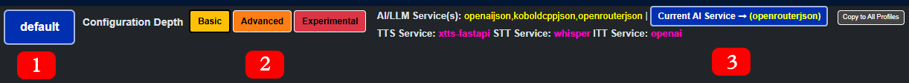

The AI's are not deterministic!
The same input does not always produce the same result! Therefore the AI will not always respond as expected.
Different Large Language Models (LLM) will provide different outputs, not all are designed for role-playing. Smaller models will not have as much
accurate information about Tamriel and will often hallucinate.
What do the buttons at the top do?
- 1. Character Profile: Change current AI NPC profiles (click it!)
- 2. Configuration Depth: Hide or expose advanced options in the Configuration Wizard
- 3. Current AI Service: Currently used AI connector that will be used. For most users just leave it as "openrouterjson".

You must use a JSON LLM!
It allows us to force programmatic output from the AI which allow memories, animations, moods, multi-group conversations, etc to even work.
If you have no idea what an
"Instruct/JSON" model is we recommend to use
meta-llama/llama-3-70b-instruct or any
ChatGPT model.
Error Phrases
Your AI NPCs will say certain phrases for when there is an error with the AI generation. It is a good idea to check the "AI Log" page for more information.
- "Didn't hear you, can you repeat?" = There is an error connecting to your LLM service.
- "Be quiet, I'm having a flashback, give me a minute" = To many request being sent to your LLM service.
- "I can't think clearly now..." = You broke OpenAI's useage policy (how naughty).